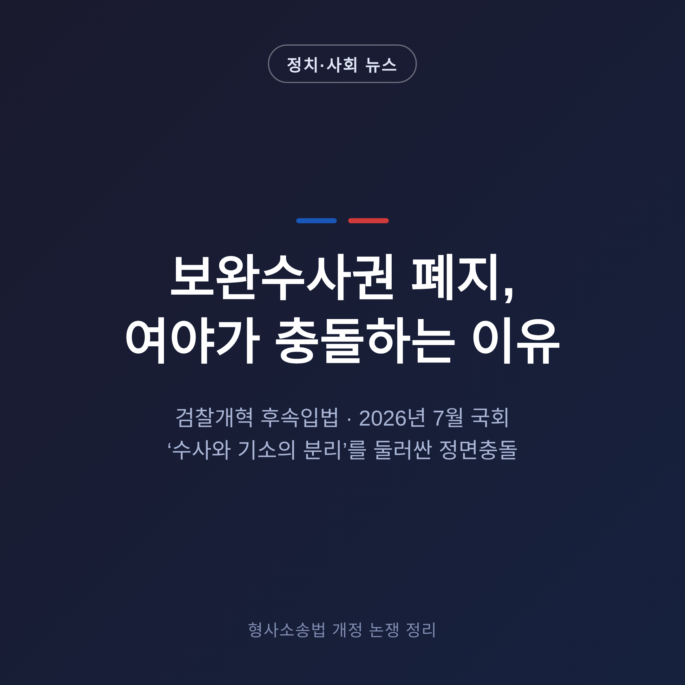
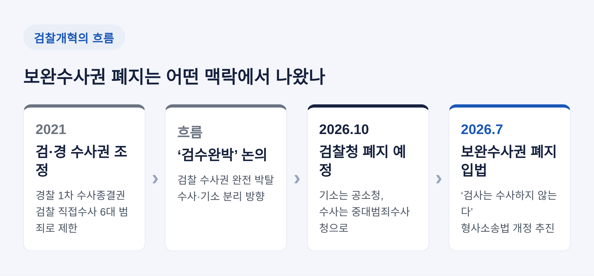
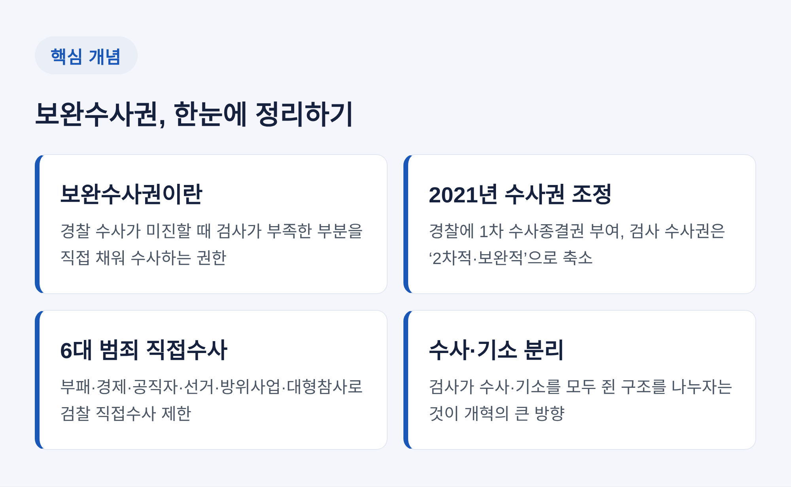
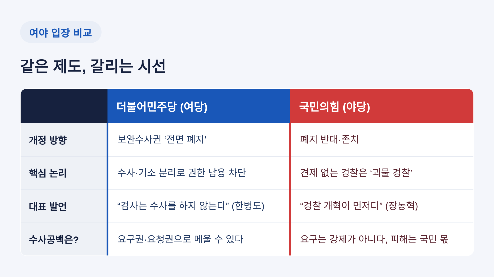
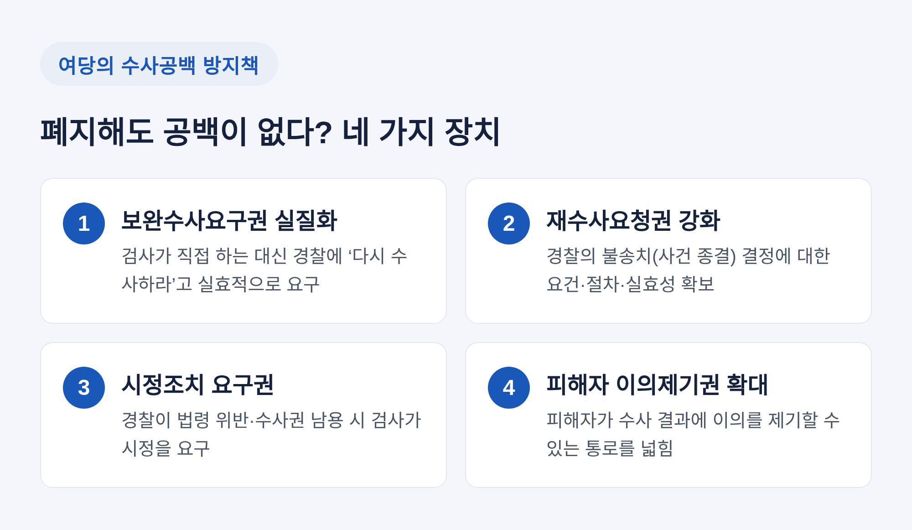

이번 글에서는 2026년 7월 국회를 뜨겁게 달구고 있는 검찰 보완수사권 폐지 논쟁을 정리해 보겠습니다. 무엇이 쟁점이고, 여야가 왜 정면으로 부딪치는지 차분히 짚어보려 합니다. 특정 진영의 편을 들기보다, 양쪽 주장을 나란히 놓고 사실관계부터 확인하는 데 무게를 두었습니다.

더불어민주당이 검찰의 보완수사권을 '전면 폐지'하는 쪽으로 가닥을 잡았습니다.
핵심 무대는 국회 법제사법위원회입니다. 법안심사제1소위원장인 김승원 의원은 7월 23일 형사소송법 개정안 심사를 마친 뒤, "수사와 기소 분리 원칙을 심사의 기본 방향으로 재확인했다"고 밝혔습니다. 민주당은 같은 날 오후와 24일에도 소위를 이어가며 조문을 하나씩 뜯어보는 축조심사를 진행했습니다.
목표 시점은 분명합니다. 이르면 다음 주, 그러니까 7월 말 본회의 처리를 염두에 두고 있습니다. 조국혁신당도 이날 서영교 법사위원장을 만나 "7월 말까지 처리해 달라"고 당부했습니다.
전날인 22일, 한병도 원내대표는 방향을 한 문장으로 압축했습니다.
이 짧은 문장이 이번 개정의 대원칙입니다.

용어부터 풀어보겠습니다.
보완수사권은 경찰이 넘긴 사건의 수사가 미진할 때, 검사가 직접 부족한 부분을 채워 수사할 수 있는 권한입니다. 예전엔 검찰이 수사의 처음부터 끝까지를 폭넓게 쥐고 있었습니다. 지금은 다릅니다.
2021년 검·경 수사권 조정이 분기점이었습니다. 이때 경찰에 1차 수사 종결권이 주어졌고, 검사의 수사권은 일부 범죄를 뺀 나머지에서 '2차적·보완적' 권한으로 좁혀졌습니다. 검찰의 직접수사는 부패·경제·공직자·선거·방위사업·대형참사, 이른바 6대 범죄로 제한됐습니다.
그러니까 보완수사권은 좁아진 검찰 권한 안에서 경찰 수사를 견제하고 보완하던 마지막 고리인 셈입니다. 흔히 쓰이는 '검수완박', 즉 '검찰 수사권 완전 박탈'이라는 말도 이 흐름의 연장선에 있습니다.
여기서 한 걸음 더 나아간 것이 지금의 이재명 정부 검찰개혁입니다. 검찰청을 폐지하고, 기소는 공소청이, 수사는 중대범죄수사청이 나눠 맡는 구조입니다. 관련법에 따라 검찰청은 2026년 10월 공소청으로 전환될 예정으로 알려져 있습니다. 이번 형사소송법 개정은 그 큰 틀의 마지막 남은 조각, 즉 보완수사권까지 걷어내는 후속입법입니다.

민주당의 논리는 '수사와 기소의 분리'로 요약됩니다.
검사가 수사도 하고 기소도 하는 구조에서는 권한이 한 손에 몰립니다. 이 구조가 이른바 '표적 수사'나 '별건 수사' 같은 오남용의 통로가 돼 왔다는 것이 여당의 문제의식입니다. 그러니 검사의 손에서 직접 수사하는 권한을 떼어내야 한다는 것입니다.
물론 폐지만 하면 '수사 공백'이 생길 수 있습니다. 민주당도 이 지점을 의식하고 있습니다.
23일 소위에서 논의된 공백 방지책은 이렇습니다. 검사가 직접 나서는 대신 경찰에 다시 수사하라고 요구하는 '보완수사요구권'을 실질적으로 작동시키고, 경찰이 사건을 덮는 불송치 결정을 했을 때 '재수사요청권'의 요건과 실효성을 강화한다는 구상입니다. 경찰이 법령을 어기거나 수사권을 크게 남용하면 검사가 시정조치를 요구하도록 하고, 수사관 실명제와 책임제도 함께 논의됐습니다. 피해자가 이의를 제기할 수 있는 권리도 넓히기로 했습니다.
민주당은 물러설 뜻이 없어 보입니다. "국민의힘이 협상 테이블에 복귀해도 원점 논의는 없다"는 강경한 입장을 내놓았습니다.
국민의힘의 반발은 그 못지않게 강합니다.
이 당은 보완수사권 폐지를 "국민의 생명과 안전을 위협하는 입법"으로 규정하고 저지에 당력을 모으고 있습니다. 핵심 우려는 '수사 공백'과 '견제 없는 경찰'입니다.
장동혁 대표의 표현이 상징적입니다.
그는 국민의 삶을 위협하는 것은 '정치 검찰'이 아니라 '무능·부패·정치 경찰'이라며, 개혁의 대상은 오히려 경찰이고 검찰 해체보다 경찰 개혁이 먼저라고 주장합니다. 정점식 원내대표도 "보완수사권은 검찰을 위한 권한이 아니라 국민의 권리와 피해자를 보호하기 위한 제도"라고 강조했습니다.
국민의힘은 최근 불거진 경찰 부실수사 논란을 근거로 삼습니다. 경찰 수사가 잘못됐을 때 이를 바로잡던 장치가 바로 보완수사권인데, 이걸 없애면 피해는 결국 국민과 범죄 피해자에게 돌아간다는 논리입니다. 국민의힘은 민주당의 단독 법사위 운영에 반발해 7월 국회 의사일정을 사실상 보이콧하며 맞서고 있습니다.

결국 논쟁은 한 곳으로 모입니다. 검찰의 보완수사권을 없애도 정말 공백이 생기지 않느냐는 물음입니다.
여당은 "요구권과 요청권으로 메울 수 있다"고 봅니다. 야당은 "요구는 강제가 아니다"라고 반박합니다.
실무에서 이 차이는 작지 않습니다. 검사가 경찰에 "다시 수사하라"고 요구해도, 경찰이 스스로 내린 결론을 뒤집게 만들 실효적 강제력이 있느냐가 관건입니다. 한 언론은 이 대목을 두고 "경찰이 경찰의 말을 스스로 뒤집을까"라는 물음으로 정리하기도 했습니다.
국회 안 지형도 팽팽합니다. 법사위원 18명 가운데 9명은 기본적으로 폐지에 반대하는 것으로 전해집니다. 여야가 정확히 반으로 갈린 셈입니다. 그만큼 조문 하나하나에서 신경전이 이어지고 있습니다.

남은 절차는 속도전입니다.
민주당은 소위 축조심사를 마무리하고 이르면 7월 말, 30일 전후 본회의 처리를 목표로 삼고 있습니다. 관건은 본회의 표결 단계입니다. 국민의힘이 무제한토론, 곧 필리버스터에 나서면 토론을 끝내는 데 재적의원 5분의 3, 180석의 동의가 필요합니다. 이때 조국혁신당 등의 협조 여부가 변수가 됩니다.
시점도 미묘합니다. 10월로 예정된 검찰청 폐지·공소청 전환 일정과 맞물려 있어, 이번 형사소송법 개정이 7월 국회에서 처리되느냐가 검찰개혁의 '완성' 시점을 좌우하게 됩니다.
다만 지금은 확정된 것이 많지 않습니다. 본회의 날짜도 '이르면 7월 말' 수준이고, 조직개편의 세부 일정도 자료마다 표현이 조금씩 다릅니다. 단정하기엔 이른 국면입니다.
정리하면 이렇습니다.
이번 논쟁은 단순한 권한 다툼이 아니라, '검사는 수사하지 않는다'는 원칙을 어디까지 밀어붙일 것인가에 대한 시각차입니다. 한쪽은 권한 남용을 끊는 개혁이라 부르고, 다른 한쪽은 국민을 지키던 안전장치의 제거라 부릅니다.
— 같은 제도를 두고 누구는 '개혁'을, 누구는 '공백'을 먼저 봅니다.
그 사이 어디쯤에 답이 있을지, 7월 말 국회가 어떤 선택을 내놓을지 차분히 지켜봐야겠습니다.